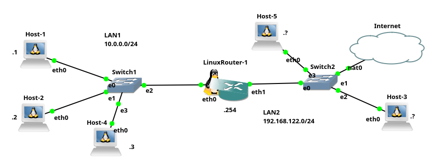

Configuração básica de rede em hosts Linux
Uma tarefa muito corriqueira para qualquer administrador de rede é a configuração de hosts na rede, de forma que este acesse a rede local e principalmente à Internet.
O que é necessário configurar para a rede funcionar?
A configuração de um host na rede, normalmente se dá por três passos básico, sendo esses:
- Configuração do IP e máscara de rede, isso permite que o host acesse a rede local;
- Configuração da rota padrão, que permitirá que o host acesse outras redes, tal como a Internet;
- Configuração do IP do servidor ou servidores DNS, isso possibilitará que o host acesse hosts através de nomes e não endereços IPs - já que é bem mais fácil lembrar de nomes do que IPs.
Com o passo 1, é possível acessar a rede local, com o passo 2 é possível acessar outras redes e com o passo 3 é possível acessar hosts utilizando nomes, tal como www.google.com.br.
Atenção: O primeiro passo é obrigatório se você quiser acessar a rede local. Já o passo 2 e 3 são opcionais! Executando apenas o passo 1 e passo 2 corretamente, você já pode acessar outras redes, como por exemplo a Internet, mas somente através do uso de endereços IP, o que a maioria das pessoas normalmente não fazem. Assim, é quase obrigatório realizar também o terceiro passo, para só então as pessoas considerem que o host esteja conectado corretamente na rede/Internet.
Configuração manual ou automática?
Há duas formas de realizar os três passos de configuração de rede citados anteriormente:
- Estático: neste as configurações são feitas manualmente, pelo usuário/administrador do sistema. Então, o usuário/administrador do host deve ter conhecimento prévio da rede, para saber quais endereços utilizar durante a configuração do host;
- Automático: utilizando esse método o computador será configurado automaticamente por outro computador da rede. Normalmente tal configuração vem via servidor DHCP/BOOTP, pelo roteador da rede ou ponto de acesso sem fio. Neste tipo de configuração o usuário não precisa saber dos endereços de rede, pois isso é feito “magicamente” para ele.
É importante perceber que a maioria dos hosts atualmente têm sua configuração de rede feita de forma automática, via DHCP. Entretanto, bons administradores de rede, devem saber configurar hosts manualmente (não só via DHCP), pois isso pode ser vital durante a resolução de problemas. Além do que, muitos equipamentos quem compõem a infraestrutura das redes são preferencialmente, se não obrigatoriamente configurados com o método manual (devido à questões administrativas, de segurança, etc).
Configuração permanente ou temporária?
Sistemas UNIX-Like, permitem ainda duas formas de configuração de rede:
- Volátil: nesta, toda configuração feita é perdida se o host for reiniciado (ligado/desligado). É uma configuração “temporária”, que pode ser mais indicada/utilizada para testes;
- Não volátil: nesta, a configuração persiste mesmo que o host seja desligado e religado. Este tipo de configuração é realizada em arquivos que ficam armazenados nos hosts da rede.
A configuração chamada aqui de não volátil, também é denominada de estática ou via arquivo, mas ela pode ser utilizada tanto para configurar IPs estáticos, quanto automáticos/dinâmicos. Cuidado com a confusão nos termos… :-p
Atualmente, um problema que existe na configuração não volátil em hosts Linux, é que cada distribuição Linux pode fazer isso de uma forma diferente da outra, e pior, a configuração pode mudar de versão para versão, dentro da mesma distribuição. É claro que essa falta de padronização geralmente causa confusão na hora de configurar hosts Linux.
Visto as possibilidades de configurações de rede para hosts Linux, agora serão apresentados os comandos e arquivos que permitem efetivar essas configurações.
Atenção!!! normalmente a tarefa de configuração de rede requer privilégios de administrador, ou seja você deve ser root para realizar a configuração. Atualmente isso pode ser feito também com o auxilio do comando
sudo.
Configurando IP/Máscara com o comando ifconfig
Tradicionalmente sistemas Like-UNIX utilizam o comando ifconfig, para configurar o endereço IP e máscara de rede de uma dada placa de rede. Os parâmetros e opções mais comuns do comando ifconfig são:
ifconfig- apresenta a configuração de todas as placas de rede ativas do host.ifconfig -a- apresenta a configuração de todas as placas de rede do host, inclusive as que não estiverem ativas.ifconfig eth0- apresenta a configuração apenas da placa de rede, neste caso foi utilizada como exemplo aeth0, mas pode ser outra placa. A descoberta do nome das placas de rede pode ser feita utilizando o comandoifconfig, sem nenhuma opção ou com-a.ifconfig eth0 172.16.1.1 netmask 255.255.255.0- atribui um IP e máscara de rede à placa de rede. No exemplo é atribuído o IP 172.16.1.1 com máscara classe C à placaeth0. Atenção, se a máscara a ser utilizada tiver a mesma classe do IP, não é necessário incluirnetmaske a máscara, ou seja, oifconfigfará isso automaticamente para você.ifconfig eth0 172.16.1.1/24- mesmo que o anterior, mas utilizando notação CIDR. Alguns sistemas não suportam essa forma.ifconfig eth0 down- desliga a placa de rede. Isso pode ser necessário durante alguma tarefa administrativa.ifconfig eth0 up- liga a placa de rede.
Há outras opções e parâmetros possíveis para o ifconfig, mas o básico que queremos por enquanto é isso!
O comando
ifconfigfoi descontinuado no Linux, todavia é muito comum ainda encontrar ele por ai e principalmente sistemas como os BSDs ainda utilizam oifconfig, por isso é muito importante saber como utilizá-lo.
Configurando rotas com o comando route
Depois de configurar o endereço IP é comum adicionar uma rota padrão, para que o host consiga acessar outras redes (Internet) e isso pode ser feito com o comando route. Para configuração básica de rotas, as opções e parâmetros mais utilizados para o comando route são:
route- apresenta as rotas presente no host.route -n- mesmo que o anterior, mas apresenta números e não nomes, ou seja, não tenta converter IPs de hosts em nomes, nem dá nome as portas ativas no host. Isso normalmente apresenta o resultado/saída do comando de forma mais rápida, já que não é necessário esperar pela conversão de números em nomes.route add default gw 172.16.1.254- adiciona uma rota padrão, neste exemplo o IP do roteador padrão é o 172.16.1.254.route del default- apaga a rota padrão. Caso mais de uma rota padrão esteja presente, é possível complementar o comando informando qual rota será deletada, tal como:route del default gw 172.16.1.254.
O comando route, também permite adicionar rotas para rede (--net) e hosts (--host), mas não abordaremos isso aqui.
O comando
routefoi descontinuado no Linux. Todavia, é muito comum encontrá-lo por ai e assim como oifconfig, os BSDs ainda utilizam oroute.
Configurando IP/Máscara/rotas com o comando ip
Como mencionado anteriormente os comandos ifconfig e route foram descontinuados no Linux. Atualmente o comando padrão para configuração de IP, máscara de rede e rotas no Linux é o comando ip. Então, o ip substitui os comandos ifconfig e route, entretanto o ip não é utilizado para configurar o DNS.
Os principais exemplos de uso de opções e parâmetros utilizados com o comando ip, são:
ip addressouip address show- apresenta a configuração de todas as placas de rede do host.ip routeouip route show- apresenta as rotas presente no host. Neste também é possível utilizar a opção-N, para mostrar número ao invés de nomes, tal como:ip -N route.ip address add 172.16.1.1/24 dev eth0- atribui um IP e máscara de rede à placa de rede. No exemplo é atribuído o IP 172.16.1.1 com máscara classe C à placaeth0.ip address show dev eth0- apresenta a configuração apenas da placa de rede, neste caso foi utilizada como exemplo aeth0, mas pode ser outra placa.ip address del 172.16.1.1/24 dev eth0- Apaga um IP que foi atribuído a uma dada placa de rede. No exemplo foi deletado o IP 172.16.1.1/24, que havia sido atribuído à placa de redeeth0. Atenção, o comandoipnão substitui os IPs atribuídos previamente à uma placa de rede (que era o comportamento doifconfig). Então, se você atribuir um IP e depois o outro, vão ficar os dois IPs atribuídos naquela placa de rede, por isso é importante a opçãodel, assim é possível remover um IP indesejado/incorreto. Exemplo:ip a a 172.16.1.1/24 dev eth0; ip a a 192.168.1.2/24 dev eth0; ip a a 172.16.1.2/24 dev eth0;, o host onde foram executados esses comando, terá três IPs: 172.16.1.1, 172.16.1.2 e 192.168.1.2. Utilizar vários IPs em uma placa de rede não é tão comum.ip route add default via 172.16.1.254- adiciona uma rota padrão, neste exemplo o IP do roteador padrão é o 172.16.1.254.ip route del default- apaga a rota padrão.ip link show- apresenta o status das placas de rede.ip link set dev eth0 down- desliga a placa de rede. Isso pode ser necessário durante alguma tarefa administrativa.ip link set dev eth0 up- liga a placa de rede.
É possível abreviar as opções do comando
ip, tal comoip a, para ver o status da parte de endereçamento. Entretanto, se você pretende fazer alguma prova ou certificação Linux, é aconselhável utilizar/treinar as opções sem abreviação, já em que provas e certificações são exigidos os comandos completos!
Há outras opções do comando ip, mas a configuração básica de hosts na rede normalmente requer apenas o que foi apresentado anteriormente.
Configurando DNS com o arquivo /etc/resolv.conf
Para que hosts consigam acessar redes/Internet utilizando nomes, é necessário informar ao host qual é o IP do servidor DNS, que ele deve utilizar para converter nomes em IPs. Assim, para realizar essa tarefa em hosts Like-UNIX, basta criar/editar o arquivo /etc/resolv.conf e incluir nele a opção nameserver seguida do IP do servidor DNS. Isso pode ser feito da seguinte forma:
echo nameserver 8.8.8.8 > /etc/resolv.conf- informa que o servidor de nomes é o Google (8.8.8.8). Neste exemplo foi utilizado o 8.8.8.8, mas você pode utilizar outros servidores/IPs. Atenção, tal comando sobrescreve (>) o conteúdo do arquivo/etc/resolv.conf.echo nameserver 172.16.1.254 >> /etc/resolv.conf- mesmo que o anterior, mas não sobrescreve o arquivo, mas sim adiciona o conteúdo no final do arquivo (>>).cat /etc/resolv.conf- apresenta o conteúdo do arquivo/etc/resolv.conf, isso é útil para verificar qual é a configuração atual, presente no arquivo.
Normalmente no Linux é possível configurar até 2 servidores DNS, o primeiro nameserver que aparecer no arquivo, é chamado de primário e o seguinte é o secundário. Inicialmente, o sistema tentará resolver o nome utilizando o servidor primário, se esse falhar será utilizado o servidor secundário. Alguns Linux permitem configurar mais que dois servidores DNS para a resolução de nomes. No exemplo a seguir o arquivo de configuração /etc/resolv.conf, tem como servidor primário o 8.8.4.4 e o secundário é o 1.1.1.1, ou seja, é a ordem que aparece o nameserver:
$ cat /etc/resolv.conf
nameserver 8.8.4.4
nameserver 1.1.1.1
Aqui, foi apresentado o comando echo para inserir conteúdos no arquivo /etc/resolv.conf e cat para ver o conteúdo. Entretanto, também é possível criar/editar esse arquivo utilizando editores de texto, tais como o vi ou nano.
Há outras configurações/opções possíveis para o arquivo /etc/resolv.conf, mas não vamos abordá-las aqui.
Atenção, todos os sistemas operacionais like-UNIX utilizam o mesmo arquivo/método para configurar o servidor DNS no cliente, isso é padrão!
Configurando a rede automaticamente via DHCP utilizando o comando dhcpcd
Atualmente, quase todos hosts têm sua configuração de rede feita via DHCP. Isso é possível, pois a maioria das redes possuem equipamentos como roteadores e APs, que por sua vez são normalmente equipados com servidores DHCP. Assim, o servidor DHCP fornece para os clientes da rede, configurações como: IP do host, máscara de rede, rota padrão e DNS.
Utilizar configuração via DHCP é muito prático, fácil e evita erros de configuração (ex. IPs duplicados). Isso facilita muito o trabalho do administrador de rede e também permite que redes sem administradores funcionem sem grandes problemas, mesmo que o cliente/usuário da rede não tenha conhecimentos a respeito de redes de computadores.
Atualmente o comando mais utilizado para se obter configurações de rede no cliente, via DHCP deve ser o dhclient. Todavia aqui iremos apresentar o dhcpcd, que também é outro comando muito utilizado em Linux e BSDs.
Não há grandes diferenças entre esses comandos, então se você aprender trabalhar com um desses não terá problemas em utilizar o outro!
Para utilizar o dhcpcd precisamos saber basicamente o seguinte:
dhcpcd- pede configurações de rede para um servidor DHCP.dhcpcd eth0- o mesmo que o anterior, mas especifica a placa de rede que vai receber tal configuração de rede via DHCP. No exemplo foi utilizada a placa de redeeth0.dhcpcd -k eth0- pede para desligar/remover as configurações feitas via DHCP da placa de redeeth0.
Há outras opções para o
dhcpcd, mas vamos parar por aqui.
Após executar o comando dhcpcd o host cliente envia um pacote DHCP para a rede, o servidor recebe esse pacote e responde com a configuração da rede para este cliente. O cliente recebe a configuração enviada pelo servidor e aplica as configurações. Após isso, o host cliente deve conseguir acessar a rede. É possível verificar essa configuração posteriormente com os comandos ifconfig, route, ip e cat /etc/resolv.conf.
Os comando de cliente DHCP (dhclient, dhcpcd, etc), normalmente continuam em execução após serem executados. Isso é necessário, pois o servidor DHCP pode exigir que o cliente renove o empréstimo do IP de tempos em tempos.
Configuração via de rede via arquivos
em construção!
Exemplo prático
Para uma melhor consolidação dos conceitos apresentados anteriormente, a seguir são apresentados exemplos práticos do uso dos comandos necessários para a configuração básica de redes de computadores. Tal exemplo utiliza o cenário de rede da Figura 1.
|  |
|---|
| Figura 1 - Cenário de rede |
Neste cenário de exemplo as configurações utilizadas são: